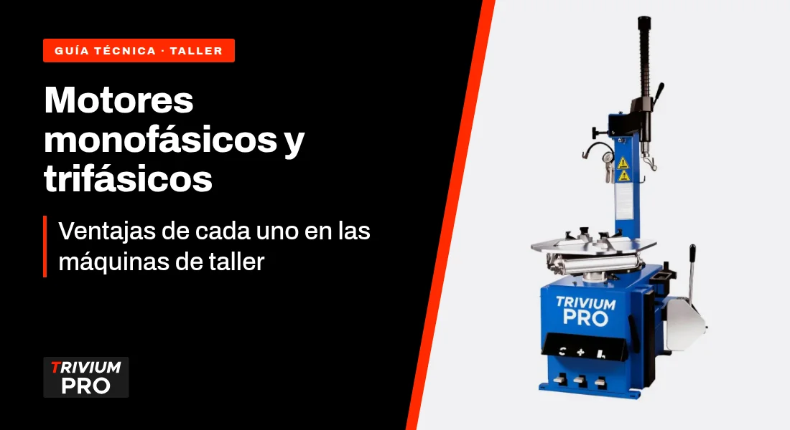

En los talleres automotrices, elegir el equipo adecuado es crucial para garantizar eficiencia, durabilidad y rendimiento. Una de las decisiones importantes es optar por máquinas con motores monofásicos o trifásicos. A continuación, analizaremos las diferencias clave entre ambos tipos de motores y las ventajas que ofrecen según las necesidades de cada taller.
1. Motores monofásicos
Qué son:
Los motores monofásicos funcionan con una sola fase de corriente alterna (AC), que es la energía eléctrica estándar disponible en la mayoría de los hogares y pequeños negocios. Operan generalmente a 110 V o 220 V.
Ventajas:
- Fácil acceso a la energía:
- Los motores monofásicos pueden conectarse directamente a la red eléctrica doméstica, lo que los hace ideales para talleres pequeños o ubicados en zonas residenciales.
- Costos iniciales más bajos:
- Su fabricación y mantenimiento suelen ser más económicos que los motores trifásicos.
- Portabilidad:
- Muchas máquinas monofásicas son compactas y ligeras, lo que facilita su transporte y uso en diferentes ubicaciones.
- Instalación sencilla:
- No requiere transformadores ni configuraciones complejas en la red eléctrica.
Limitaciones:
- Menor potencia: Los motores monofásicos tienen una capacidad de potencia limitada, por lo que no son ideales para equipos que requieran gran fuerza o uso continuo intensivo.
- Eficiencia energética: Consumen más energía en relación con el trabajo que realizan, lo que puede aumentar los costos operativos a largo plazo.
2. Motores trifásicos
Qué son:
Los motores trifásicos operan con tres fases de corriente alterna, distribuyendo la energía de manera uniforme. Son comunes en aplicaciones industriales y comerciales. Funcionan generalmente a 380 V o más.
Ventajas:
- Mayor potencia y rendimiento:
- Son ideales para equipos que necesitan operar de forma constante y con alta potencia, como elevadores de autos, compresores grandes y alineadoras.
- Eficiencia energética:
- Consumen menos energía por unidad de trabajo realizado, lo que reduce los costos operativos.
- Durabilidad:
- Diseñados para uso intensivo, los motores trifásicos tienen una vida útil más larga y requieren menos mantenimiento.
- Estabilidad:
- Ofrecen un funcionamiento más estable y con menos vibraciones, lo que reduce el desgaste de los componentes.
Limitaciones:
- Requieren infraestructura eléctrica especial:
- Es necesario contar con una red trifásica, lo que puede implicar costos adicionales de instalación.
- Costos iniciales más altos:
- Tanto los equipos como su mantenimiento suelen ser más costosos comparados con los monofásicos.
3. ¿Cuál es la mejor opción para tu taller?
La elección entre motores monofásicos y trifásicos depende de las necesidades específicas de tu taller:
Elige máquinas con motores monofásicos si:
- Tienes un taller pequeño o trabajas desde casa.
- Usas equipos que no requieren alta potencia.
- Buscas una solución más económica y sencilla de instalar.
Elige máquinas con motores trifásicos si:
- Operas un taller grande con alta demanda de trabajo.
- Necesitas equipos robustos para uso intensivo y constante.
- Quieres optimizar costos energéticos a largo plazo.
Conclusión
Tanto los motores monofásicos como los trifásicos tienen su lugar en los talleres automotrices. Para talleres pequeños o con menor carga de trabajo, los motores monofásicos son una opción rentable y funcional. Sin embargo, para operaciones de mayor escala, los motores trifásicos ofrecen mejor eficiencia, potencia y durabilidad. Antes de tomar una decisión, evalúa la infraestructura eléctrica disponible y las necesidades específicas de tu negocio.